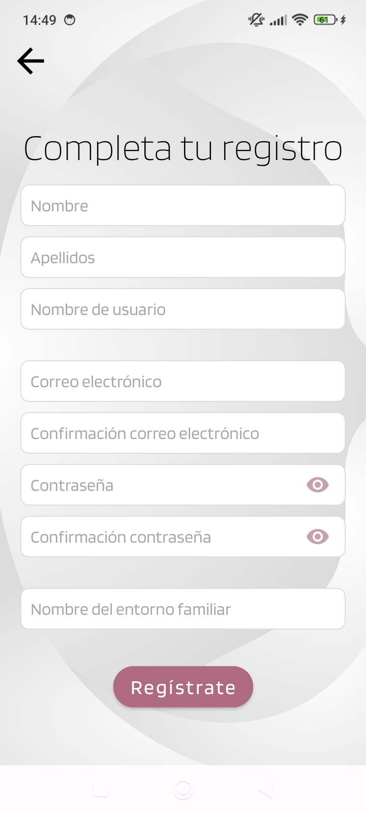

Preguntas Frecuentes
¿Cómo puedo descargar la app?
La aplicación está disponible para su descarga en la Play Store. Simplemente busca el nombre de nuestra app en la tienda y sigue las instrucciones para instalarla en tu dispositivo móvil.
¿Es gratuita la app?
Sí, la aplicación es completamente gratuita. Sin embargo, puede que existan ciertas funcionalidades avanzadas que requieran un pago adicional o suscripción.
¿Cómo debo registrarme?

Para registrarte, debes completar todos los campos solicitados en el formulario de registro. Es esencial asegurarse de que la dirección de correo electrónico proporcionada sea válida y que las contraseñas coincidan, con un mínimo de seis caracteres. Además, deberás registrar el nombre del "Entorno Familiar", que identificará a tu familia dentro de la plataforma. Si este entorno ya existe, asegúrate de obtener el nombre exacto y la clave de acceso de uno de sus miembros para unirte correctamente.
¿El nombre del entorno familiar es único?
Sí, el nombre del entorno familiar debe ser único y no podrá ser modificado una vez que se haya registrado. Asegúrate de elegirlo cuidadosamente.
¿Qué es la contraseña del entorno familiar?
La contraseña del entorno familiar es una clave que todos los miembros de ese entorno deben conocer. Si te registras en un entorno ya existente, será necesario que proporciones esta clave para unirte. Si eres el primer miembro en registrarse, tendrás que establecer esta contraseña, la cual deberás compartir con los demás miembros para que puedan acceder al entorno familiar.
¿Puedo restablecer la contraseña de una cuenta infantil si la olvido?
No es posible restablecer la contraseña de una cuenta infantil. No obstante, al crear una cuenta infantil, se genera automáticamente una nota en la cuenta del adulto encargado, que incluye la contraseña de la cuenta infantil. Esta contraseña estará disponible para su consulta dentro de la cuenta del adulto.
¿Cómo funciona el área infantil y la gestión de tareas para los más pequeños?
El área infantil permite a los padres organizar y gestionar las tareas diarias de los más pequeños de la familia. A través de esta función, los adultos pueden crear listas de tareas personalizadas, asignar responsabilidades y establecer recordatorios para que los niños completen sus obligaciones de manera organizada.
Además, el sistema incorpora un mecanismo de puntos e incentivos que premia a los niños por cada tarea completada. Estos puntos pueden acumularse y canjearse por logros y recompensas, fomentando la motivación y el desarrollo de una ética de trabajo positiva desde una edad temprana.
Los padres pueden seguir el progreso de sus hijos a través de la app, (Dentro de área infantil, consultar tareas) lo que les permite supervisar el cumplimiento de las tareas de una manera positiva y efectiva.
¿Cómo puedo eliminar mi cuenta y los datos asociados?
Para eliminar tu cuenta y todos los datos asociados a ella, abre la app Family Link en tu dispositivo móvil, accede a la sección Ajustes en el menú principal, desplázate hacia abajo y selecciona la opción Eliminar cuenta. Luego, introduce la contraseña de tu cuenta para confirmar. Una vez que elimines tu cuenta, se borrarán de manera permanente todos tus datos personales, incluyendo tu nombre, correo electrónico, y cualquier dato de uso que hayas generado en la app. Ten en cuenta que los datos requeridos por obligaciones legales podrían ser retenidos por un período limitado antes de ser eliminados por completo.